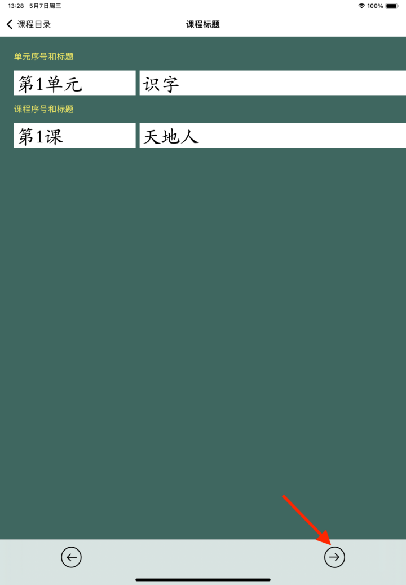
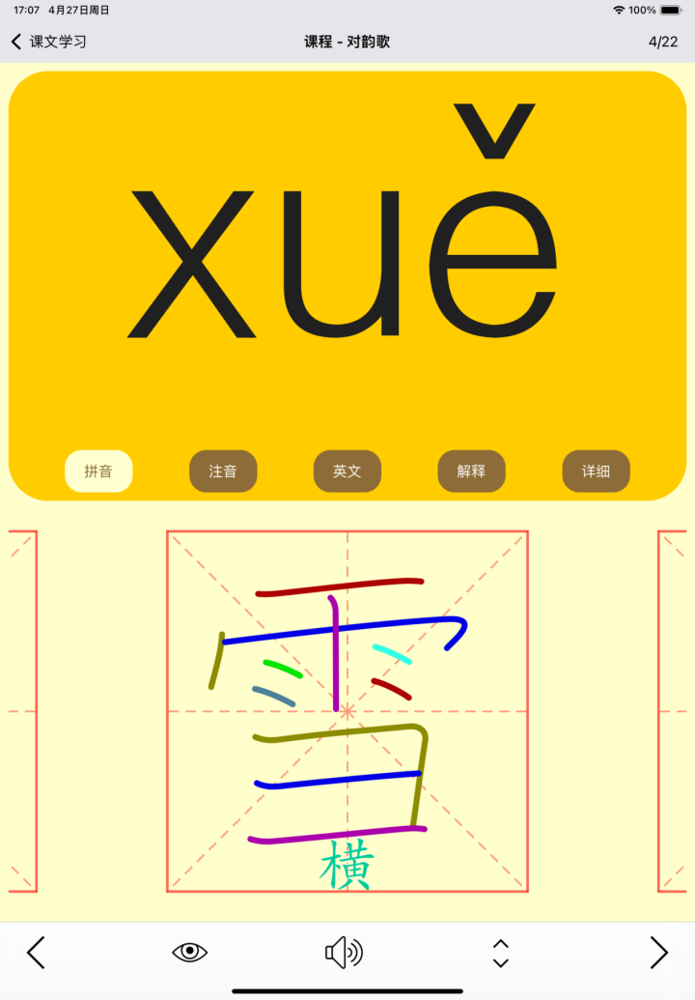

自定义课本功能说明(20250427)
一、总体步骤
本APP支持用户新增课本，以及对现有课本进行修订。
1. 新增课本步骤：
（1）在手机上，准备课本内容和目录；
（2）在APP界面新增课本；
（3）按照单元、课文的结构，将课本内容复制到APP对应的界面；
（4）利用软件所带功能，对课文文字、拼音等进行校正；
（5）确认课本内容保存；
（6）在课本列表中，点击课本，进行使用。
2. 现有课本修订步骤：
（1）在课本列表中，点击想修订的课本的编辑图标；
（2）参考新增课本的步骤，在APP页面上，依次编辑课文内容，校正拼音，最终保存。
二、新增课本详细步骤
（一）准备课本内容
1. 准备课本目录
参考学生课本目录，每个课本按照“单元、课文”的结构制定。例如课本“毛毛的识字课本”的单元和课文如下：
2. 准备每篇课文的内容
在手机的文本编辑器，或者其他能保存文字的软件中，准备号课文内容，如课文“对韵歌”：
云对雨，雪对风，花对树，鸟对虫。山清对水秀，柳绿对花红。
3. 准备每篇课文内容的拼音
可以利用“豆包”、“文心一言”、“元宝”等AI软件，快速生成课文的拼音。例如在“豆包”中输入：
请为以下文字标注拼音：“ 云对雨，雪对风，花对树，鸟对虫。山清对水秀，柳绿对花红。”
严格遵守以下规则：
1. 拼音直接显示在字的后面，拼音前后不要加括号、分号等分隔符。
2. 按照拼音的儿化音规则输出；
3. 根据上下文确定多音字的拼音；
4. 词汇末尾字，如应该轻声，需要为轻声。
将得到以下输出：
云 yún 对 duì 雨 yǔ，雪 xuě对 duì 风 fēng，花 huā对 duì 树 shù，鸟 niǎo 对 duì 虫 chóng。山 shān 清 qīng 对 duì 水 shuǐ秀 xiù，柳 liǔ绿 lǜ对 duì 花 huā红 hóng。
将生成的拼音保存好备用。
（二）增加自定义课本
1. 打开APP，进入首页后，点击左下角图标，进入课本列表；

2. 点击最下方工具栏的图标，进入新增课本的信息页面；
3. 输入合适的课本标题，课本内容描述内容。例如：

4. 点击最下方工具栏的 图标，进入下一页。
图标，进入下一页。
（三）增加单元
1. 进入示例的课本页面，有示例的单元名称、课程名称。

2. 点击 按钮，进入编辑单元名和课程名的页面。
按钮，进入编辑单元名和课程名的页面。

3. 输入合适的单元标题、课程标题。例如：

4. 点击最下方工具栏的 图标，进入下一页。
图标，进入下一页。
（四）编辑课文内容
1. 将含拼音的课文内容，粘贴到文本框内。
2. 点击最下方工具栏的图标，进入下一页。
（五）校正课文拼音
1. 查看每个字的拼音是否正确。
（1）多音字是“橙褐色”，单音字是“绿色”。
（2）长按一个字2秒钟，可以切换本字的多个发音。

2. 所有字的拼音正确后，可以进行简单的排版。

3. 可以点击“读字”按钮，检查每个字的发音是否正确。
4. 可以点击“语音”按钮，使用siri朗读，进行校对。
5. 点击最下方工具栏的 图标，进入下一页。
图标，进入下一页。
（六）明确“会读”、“会写”要求的文字
对于课文中，需要学生“会读”、“会写”的字，输入到上面的文本框内，下方会显示对应字的拼音。
（七）最终确认
1. 本页以列表形式，显示每个字的拼音、会读、会写的设置，可以查看是否准确，如有错误，点击页面左上方的“会写生字”按钮，返回前一页，进行修改。
确认所有的内容正确后，点击图标，完成本课程编辑。
2. 所有课程编辑完成后，点击“完成”按钮，生成课本。

3. 在“课本列表”页面，可以点击新课本，进行学习。



三、编辑现有课本
点击课本对应的图标，进入课本编辑模式，操作步骤与新增课本一致。